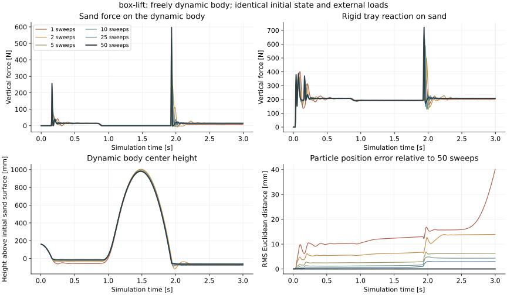

Status: running. 2/12 runs completed on horde_5080 (RTX 5080). Current run: box-lift-10. These measurements contain no neural correction or analytical force estimator yet.
The proposed hybrid step is: a small MPM solve → learned correction of particle motion → contact-force estimation. This first experiment measures the runtime saved and the errors the learned correction would have to remove.
Each run advances a freely dynamic body and sand for 3 seconds. Initial states, random seeds and applied force/torque pulses match across budgets. Every time step performs exactly 1, 2, 5, 10, 25 or 50 contact/material solver sweeps. Newton still performs grid construction, collider rasterization, matrix assembly, history handling and particle/material updates.
Any network and additional force-estimation work must fit inside the saved runtime to provide a net speedup. The budgets here do not establish that a network can achieve the required accuracy.
| Case | Exact sweeps | Coupled step [ms] | Speedup vs 50 | Particle RMS [mm] | Body center RMS [mm] | Body-force RMSE [N] |
|---|---|---|---|---|---|---|
| box-lift | 25 | 22.98 | 1.21× | 1.78 | 4.59 | 6.22 |
| box-lift | 50 | 27.83 | 1.00× | 0.00 | 0.00 | 0.00 |
Errors use matched timestamps and particle IDs over all 600 post-step states, relative to the 50-sweep rollout. Force RMSE is the RMS magnitude of the three-component force error. These are autonomous rollout differences, including accumulated trajectory divergence; they are not one-step prediction losses or supervised correction targets.

Extra GPU synchronization changes overhead. These values describe individual stages; their sum is not the independently measured coupled-step latency.
| Case | Sweeps | Task | Mean [ms] |
|---|---|---|---|
| box-lift | 50 | Locate particles on the grid | 1.757 |
| box-lift | 50 | Construct grid spaces | 1.623 |
| box-lift | 50 | Rasterize rigid-body geometry | 0.872 |
| box-lift | 50 | Transfer particle momentum and apply external acceleration | 0.853 |
| box-lift | 50 | Assemble rigid-body contact response | 0.796 |
| box-lift | 50 | Assemble elastic material equations | 1.451 |
| box-lift | 50 | Assemble plastic material equations | 1.086 |
| box-lift | 50 | Load the previous solver estimate | 0.277 |
| box-lift | 50 | Solve material and contact equations, including solver setup | 11.444 |
| box-lift | 50 | Save the solver estimate | 0.771 |
| box-lift | 50 | Update particle motion and material state | 0.479 |
| box-lift | 50 | Save contact and grid outputs | 0.131 |
One complete warmup trajectory precedes three timed trajectories. Timings synchronize the GPU around the complete MJWarp–MPM coupled solver step. External-load staging, scene cache updates, rendering, recording, resets and compilation are excluded. Component measurements use a separate trajectory with extra synchronization and must not be added to the total.
CUDA graph capture is disabled. All physics kernels run on the GPU; Python dispatches them. Newton’s stock iteration loop uses batches, so this experiment replaces only that loop with an exact fixed-count loop and disables early termination. This is not a benchmark of the unmodified max_iterations setting. The automatic solver resolves to Gauss–Seidel; its usual warm-start and initialization operations remain.
Fifty sweeps are a numerical reference. The 25-to-50 comparison and solver residuals assess its limitations. RTX 5080 measurements must not be treated as controlled comparisons with earlier RTX 5090 measurements.
Download measured metrics and configuration
Updated 2026-10-16T19:09:12.812564+00:00. Source core: IsaacLab cd1dfa54b; Newton af06def4d; Warp 1.19.0.dev20261008. Original remote checkout and environment remain unchanged.